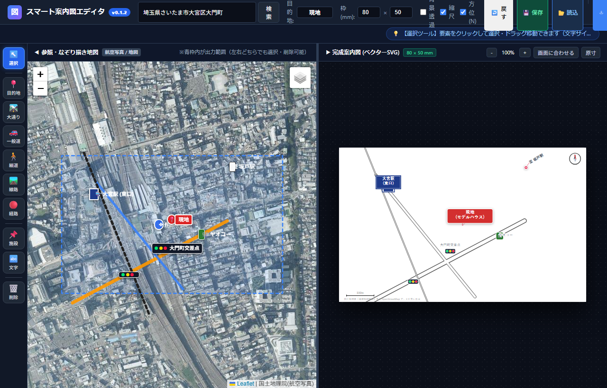
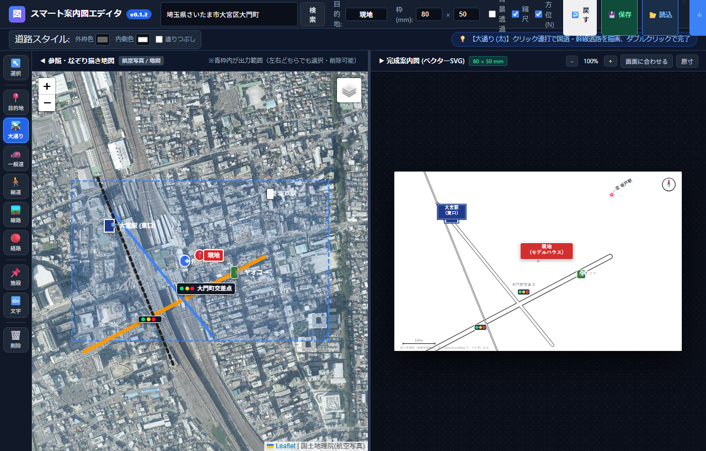
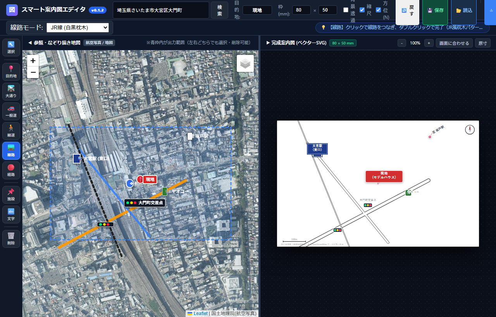
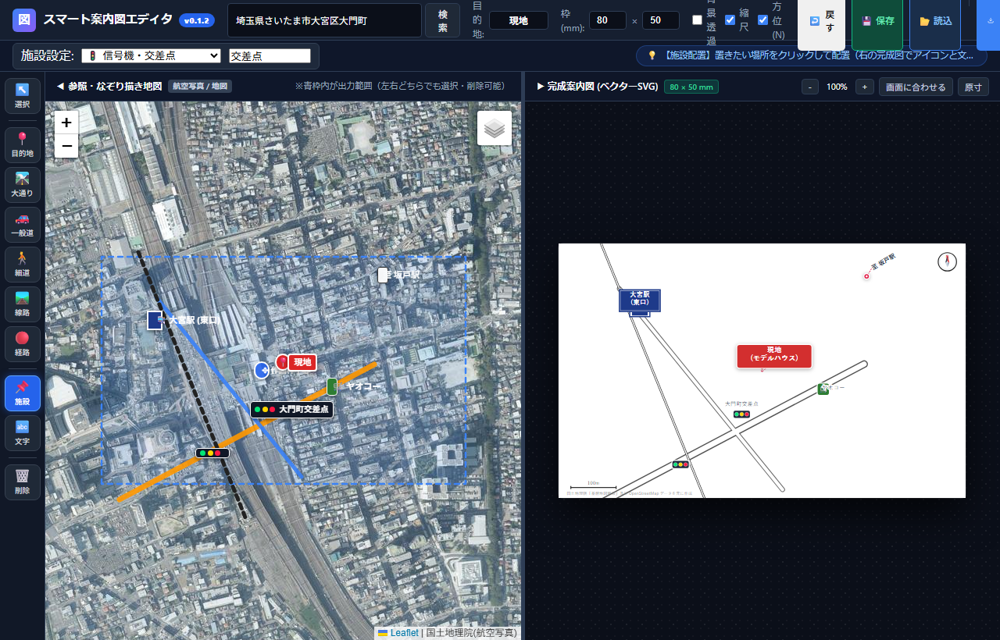

図1: スマート案内図エディタの全体画面（左：なぞり描き実地図 / 右：完成案内図ベクターキャンバス）
★ 本ツールの最大の核心：実地図をなぞるだけ（Googleマップ距離測定感覚）
💡 なぜこれほど速く、圧倒的に綺麗に描けるのか？
従来のIllustrator（イラレ）で作図する場合、下絵スクショを敷き、ペンツールでベジェ曲線を引き、線幅を調整し、交差点をアウトライン化してパスファインダーで合体・中抜きするなど、1枚に1〜2時間（修正時は半日）かかっていました。
本ツールは、Googleマップで「距離を測定」するように、道路や線路の真ん中（流心）をポチポチとクリックしていくだけで、地球上の緯度経度を拾い、外枠線（ケーシング）付きのベクター道路やJR枕木・私鉄2重線がリアルタイムに自動製図されます！
| 工程・作業項目 |
従来のIllustrator（手作業） |
スマート案内図エディタ |
| 下絵の準備 |
地図スクショを撮り、イラレに配置してロック |
検索バーに住所や駅名を入れるだけで即座に下絵展開 |
| 道路の描画 |
ペンツールでパスを引き、線幅を手動調整 |
道路の流心をGoogleマップ感覚でクリック連打するだけ |
| 交差点の処理 |
線をアウトライン化し、合体・くり抜き手作業 |
交差点同士が自動マージ（ケーシングが綺麗に一体化） |
| 線路の描画 |
白黒ストライプや2重線パターンを手動自作 |
流心をなぞるだけでJR枕木／私鉄2重線が瞬時に完成 |
| 航空写真トレース |
別途航空写真を用意して位置合わせ |
ワンタップで国土地理院の最新航空写真に切替可能 |
| 所要時間 |
1枚あたり 1〜2時間 |
1枚あたり わずか2〜3分 で完成！ |
左メニューツール別 操作手順（上から順）
1. ↖️ 選択ツール (ショートカット: V)
要素の選択、移動、プロパティ編集を行う基本ツールです。
- 要素の選択・編集: 要素をクリックすると、プロパティ編集モーダルが開き、文字・色・サイズをいつでも変更可能。
- 個別ドラッグ移動: 目的地ピン、現地プレート、駅名プレート、施設アイコン、自由テキスト、方位記号などを個別にドラッグして微調整できます。
- 削除: 要素を選択して
Delete キーを押すと即座に削除できます。
2. 📍 目的地ツール (現地・販売区画ピン)
案内図の中心となる目的地（物件現地、モデルハウスなど）を配置します。左地図をクリックするだけで、右案内図上にピンと名称プレートが配置されます。プレート色（赤・青・緑・黒・オレンジ等）も自由に変更可能です。
3. 🛣️ 大通り / 4. 🚗 一般道 / 5. 🚶 細道ツール

図2: 道路ツール選択時のスタイルインスペクター（外枠色・内側色・塗りつぶし）
- 操作手順 左画面の道路の流心（中心線）をクリック連打していき、終点でダブルクリックすると描画が完了します。
- 直線は角と交差点の2〜3点、カーブは適度な間隔で4〜5点クリックするだけで滑らかにつながります。
6. 🚆 線路ツール (JR線・私鉄線モード)

図3: 線路モード設定（JR線 白黒枕木 / 私鉄線 2重白抜き実線）
- JR線: 白黒の枕木ストライプ模様
- 私鉄線: 地図デザインで標準的な「2重白抜き実線」
- 線路の中心をテンポよくクリック連打し、ダブルクリックで完了します。
7. 🔴 経路ツール (アクセス経路・赤点線)
最寄り駅から物件現地までのルートをクリック連打でなぞると、見やすい赤点線でルートが描画されます。
8. 🏪 施設配置ツール (信号機・駅・スーパー・コンビニ)

図4: 施設スタンプ設定（信号機・駅・スーパー・コンビニ・ガソリンスタンド等）
- 信号機、駅、スーパー、学校、コンビニ各社、ガソリンスタンド等の目印スタンプを配置できます。
- 記号サイズ: 0.5倍〜2.5倍にスライダーで自由に拡大・縮小。
- 文字のみ削除（ただの信号機）: 交差点名が不要な「ただの信号機」にしたい場合は、モーダル内の「📝 文字のみ削除」を押すだけで記号単体にできます。
9. 🔤 文字配置ツール (自由テキスト・至〜駅)
「至 坂戸駅」や道路の通称（鉄砲道など）を配置します。カギ型引き出し線も利用可能で、テキスト位置と指し示す○印の両方をドラッグできます。
10. 🗑️ 削除ツール
消したい道路、線路、施設、文字をクリックして次々に消去できる消しゴムモードです（Ctrl+Zで復元可能）。